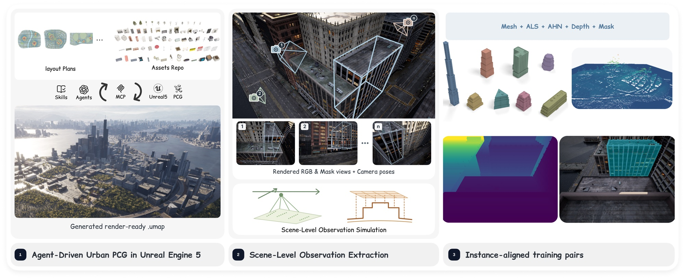
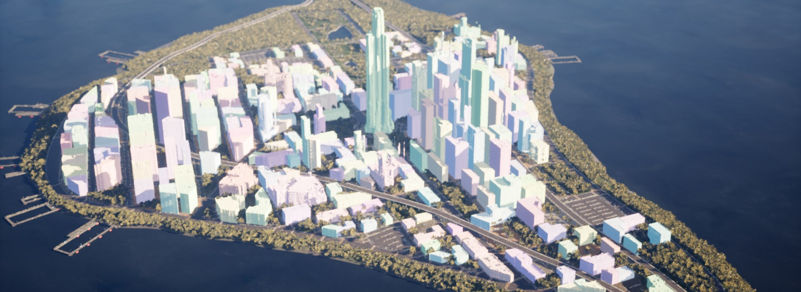
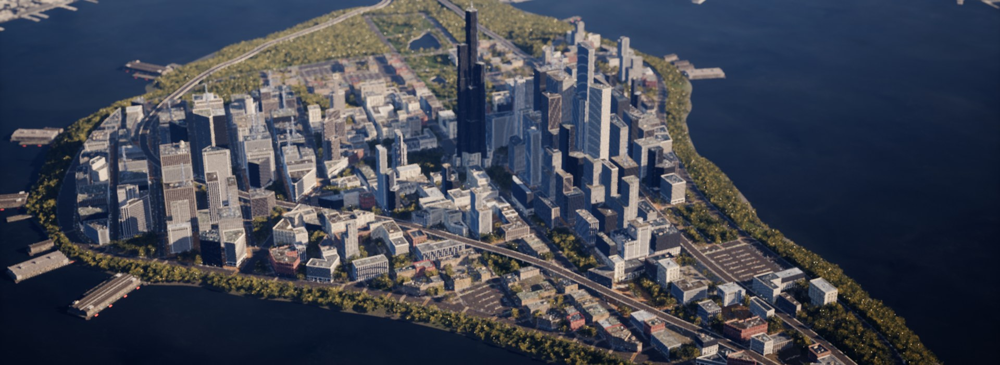
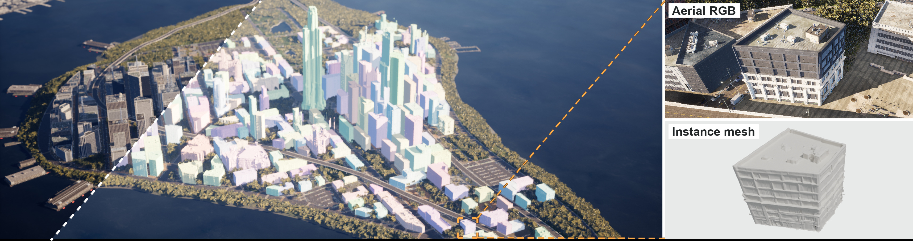
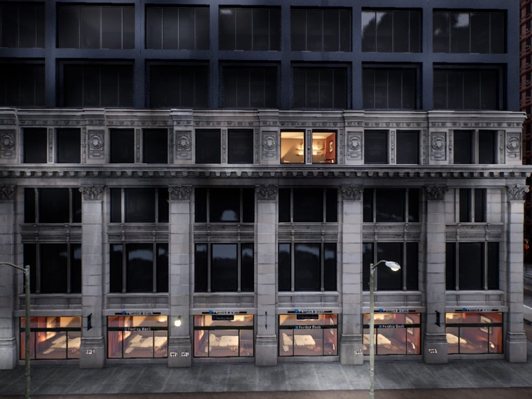
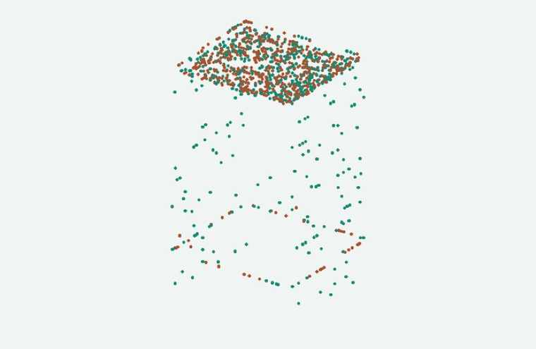
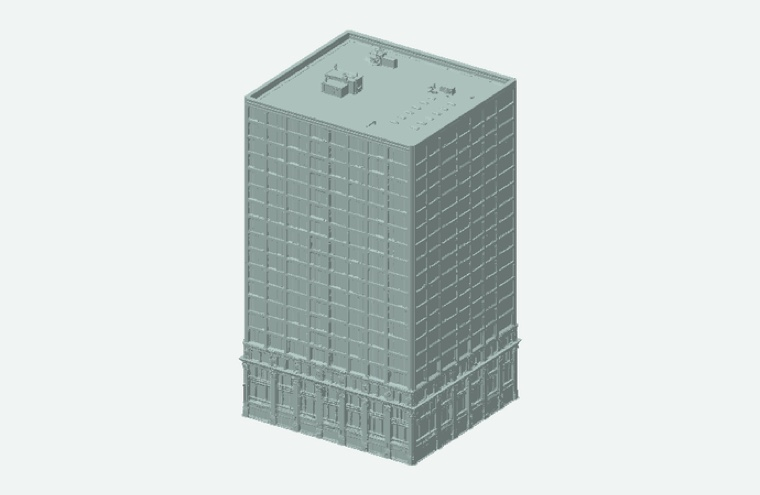
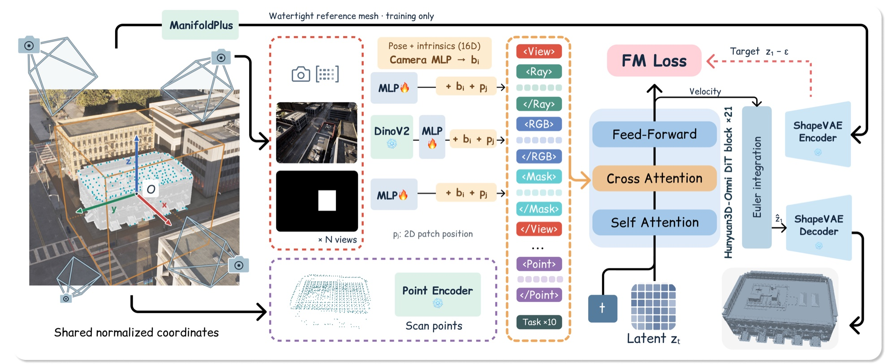

CityGym benchmark
Geographic records provide layout guidance. Unreal Engine 5 generates the cities, while cameras and scan rays observe the buildings along independent paths.

A Citywide Benchmark for Generative Building Reconstruction from Partial Aerial Observations
Explore the cities

Original scene BuildFromGen
CityGym simulates overhead and oblique photography and independently samples airborne laser returns. Building IDs connect each observation to its complete reference mesh.



Neighboring buildings occlude facades from cameras and aerial scanners. CityGym pairs these partial observations with the geometry needed to measure recovery of the hidden surfaces.
Geographic records provide layout guidance. Unreal Engine 5 generates the cities, while cameras and scan rays observe the buildings along independent paths.

The generative baseline combines uncropped RGB, target boxes, calibrated camera rays, and registered scan points to predict building meshes in a shared frame.

@misc{ma2026citygym,
title = {{CityGym}: A Citywide Benchmark for Generative Building Reconstruction from Partial Aerial Observations},
author = {Ma, Yanwen and He, Lingfeng and Deng, Yichen and Zhang, Xuying and Guo, Yijing and Li, Haoran and Tan, Yumin},
year = {2026},
url = {https://github.com/Gelercatty/CityGym}
}